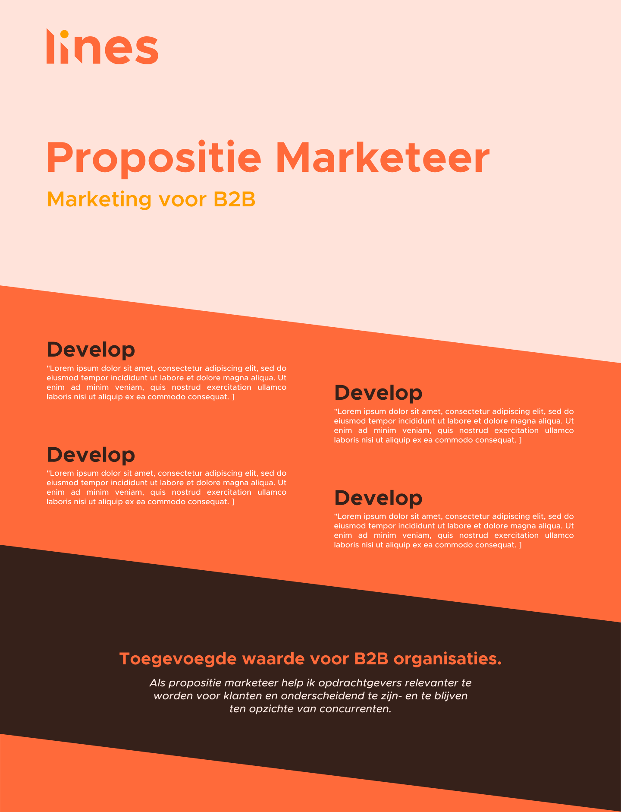

Lines brand and website design and development
Lines is a company that helps organizations reach goals by implementing innovative
business models and B2B marketing solutions. Lines becomes a part of the
organization to create a fitting solution, a great plan is worthless if it cannot
be implemented.

First version of the logo
I was tasked with creating a fitting brand with a companioning website. The brand
is energetic and progressive, always moving forward while not forgetting the past.
These values are reflected in the dynamic lines and warm and authentic colors.

Second version of the logo
To create the logo I started by experimenting with combing the word "Lines" with line shapes. After creating multiple iterations we chose the final shape. This version is well balanced and has good readability. The logo is based on the Open Source typeface Metropolis.

Third version of the logo
After finalizing the shape of the wordmark I started exploring colors. I wanted to create a color scheme that is warm but also energetic, following with the Lines values. Based on this I created a simple overview and chose the final color with the client. I made a wide selection of colors, from warm and professional too energetic and powerful.

Potential color combinations
After the color scheme was determined, production started on the website. I started by making a wireframe in Sketch, which I refined in collaboration with the client. The client had an existing website on WordPress, therefore this is the platform on which I brought the website to life.

Top section of the website